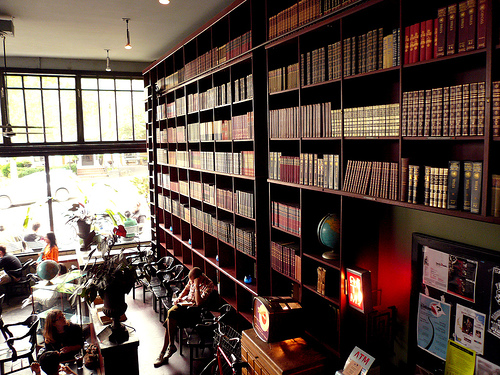

Our Vision
"We don’t get a chance to do that many things, and every one should be really excellent. Because this is our life. Life is brief, and then you die, you know? And we’ve all chosen to do this with our lives. So it better be damn good. It better be worth it."
- Steve Jobs
Hacker Cafe represents a bold new vision for the 21st century. We are not a workplace, and we are not a cubicle farm. We are a work, eat, drink, think, play, shop place. We are a coffee shop, a restaurant, a bookstore, a concert venue, a classroom, and a place to call home.
We understand that making your way in the world today takes everything you’ve got. We know that taking a break from daily worries sure would help a lot. Targeting young creative professionals, we envision the Hacker Cafe as a place where everybody knows your name.
We serve freshly brewed tea and coffee, soft drinks and a section of light meals and tasty treats and snacks. We are open for breakfast, lunch and afternoon tea from 8am to 5pm and unlike any other cafe in the town, we are open 7 days per week.
Hacker Cafe is located at the edge of the Essex Modern City – a mixed-use development that will be constructed a few blocks south of the Alamodome. An ambitious effort to revitalize the Southeast side, EMC will include 80,000 square feet of creative office space, 65,000 square feet of retail, 248 apartments, 160 condominiums, 80 townhomes, and a food hall. According to the San Antonio Express News, EMC will also include "flourishes such as a rock-climbing wall, murals painted by local artists, a mobile app allowing visitors to reserve parking and 'vertical farms' on building exteriors that would grow vegetables for use in restaurants."
The first Hacker Cafe was built in San Antonio, but this is only the beginning. We will soon be opening locations in Portland, Seattle, Mendocino, Santa Cruz, San Diego, and on Hong Kong's Lamma Island. For more information about franchise opportunities, please contact Kenneth Strain (kstrain@Hacker-Cafe.com).